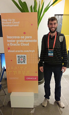

Imagem

Apel, Felipe - Analista de sistemas/ P&D
Contato
felipezapel@gmail.com
+5545 9 9968-1269,
Endereço
Parque Verde,
CEP 8580-860
Cascavel-PR Brazil
public class teste(){
system.out.println('Hello World');
}
Portfólio
Perfil Linkedin
Currículo Lattes
Artigos e Publicações
V SULCOMP - Congresso Sul Brasileiro de Computação. De 29 de Setembro a 01 de Outubro de 2010.
Universidade do Extremo Sul Catarinense (UNESC) de Criciúma / SC
Objetivos
Analista de Sistemas
Resumo
Desenvolvedor de sistemas, atua a 16 anos em trabalhos relacionados a Tecnology of Information e desenvolvimento de softwares.
Graduado em Sistemas de Informação pela Universidade
Paranaense™ Graduado em Engenharia de Software pela Univel, Ministrado
pela consultoria Audare/IBM.
Conhecimento em Oracle Forms & Pl/Sql, Java, C# .NET, PostgreSQL, UML, RUP,
Currículo na Plataforma Lattes.
http://buscatextual.cnpq.br/buscatextual/visualizacv.do?
id=K4320295E6
Projetos
- Para Oracle Forms
- Redimensionador de fontes
- Padronizador de Fontes
- Tradutor de Fontes
- Monitor de Sessões
- Para .NET
- Biblioteca de conexão com o Oracle
- Biblioteca de Persistência nHibernate Oracle/Postgres
- Para Java
- Integradores
- Conversor OFX
- Redimensionador de fontes
- Padronizador de Fontes
- Integrações
Formação acadêmica
Unipar - Universidade Paranaense
Bacharelado em Sistemas de Informação, Tecnologia da
Informação · (2006 - 2009)
Univel
Pós- Graduação em Engenharia de Software com ênfase em teste de
Software, Cascavel · (2010 - 2011)
Unipar - Universidade Paranaense
Sistemas de Informação, Cascavel · (2006 - 2009)
Experiência
- Maxicon Sistemas
Analista de sistemas - Setembro de 2014 - Present Toledo e Região, Brasil
- Atuo como Analista de Sistemas dos seguintes produtos:
-ERP Maxys na plataforma Oracle Forms utilizando Oracle Database
10g/11g/12c./18c
-Produtos de apoio ao ERP na linguagem de programação c#
-Produtos de apoio ao ERP na linguagem de programação java.
-Integradores
-Ferramentas internas de gestão do ciclo de vida (Controle de versão/
Construção/Publicação e Distribuição) dos produtos acima.
Efetuo trabalhos de migração e configuração de servidores Windows das
ferramentas acima listadas.
Para desempenhar minhas atividades utilizo as seguintes linguagens e
plataformas:
-Java (Back-end)
-c#(Back-end)
-Banco de Dados Oracle
-Banco de Dados Postgres
-Delphi
-Servidor de Aplicação IIS
-Servidor de Aplicação Wildfly
-Nuget
-Maven
-Jenkins
-SVN
- Maxicon Sistemas
Desenvolvedor, janeiro de 2010 - Present
- Desenvolvedor do sistema ERP Maxys voltado para o segmento do
Agronegócio. Linguagem PL/SQL e banco de dados Oracle. Ferramenta
Oracle Forms
- Irmaos Muffato & Cia Ltda
Programador Junior, outubro de 2008 - janeiro de 2010 (1 ano 4 meses)
- Programador responsável pelo software area de Recursos Humanos da
Empresa.Controle de Freqüência, Folha de Pagamento, Cargos e Salarios.
Linguagem de programação própria, banco de dados Oracle
- Irmaos Muffato & Cia Ltda
Técnico em Informática, setembro de 2006 - outubro de 2008 (2 anos 2 meses)
Responsável pela manutenção de informática, compra de equipamentos e
contratação de serviços de informática para 26 supermercados e 3 atacados.
- .html
- Terminação de arquivos html
- No ambiente Windows, .html é um complemento do nome do arquivo